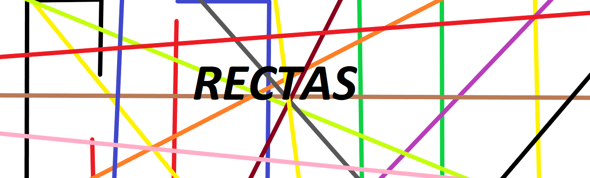
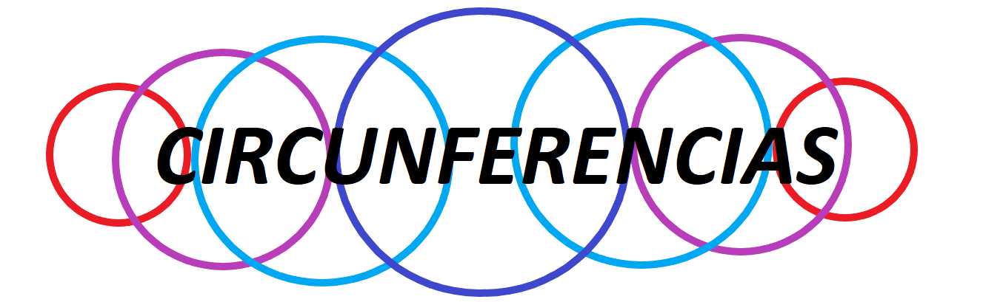

Sección 1
1: Rectas y Circunferencias
Nota: Una recta esta conformada por varios puntos en una misma dirección, tambien posee una pendiente la cual inidica que tanto esta inclidada la recta con respecto al eje X.
A lo que llegamos
Tangentes
En el plano, una recta puede intersecta a una circunferencia en un punto, intersecarla en dos puntos o no intersecarla. Las rectas que intersecan a la circunferencia en un solo punto se llaman rectas tangentes a la circunferencia. Al punto en el que la tangente interseca a la circunferencia se llama punto de tangencia. La distancia que hay del centro a la recta tangente es igual al radio.
Secantes
Las rectas que intersecta en dos puntos a la circunferencia se llaman rectas secantes. La distancia del centro de la circunferencia a la recta secante es menor que el radio.
Exteriores
Las rectas que no intersecta a la circunferencia se llaman rectas exteriores. La distancia del centro de la circunferencia a la recta exterior es mayor que el radio.
Ejercicio 1
1: Puntos en común
Seleccione una versión del ejercicio y escribe en los siguientes recuadros el número que corresponde a cada recta.
Seleccione el ejercicio:
1) Recta que "no intersecta" a la circunferencia:
2) Recta "secante" a la circunferencia por 2 puntos (Sin pasar por el centro):
3) Recta que "secante" a la circunferencia por el centro:
4) Recta que sea "tangente" a la circunferencia:
Ejercicio 2
2: Identificar
Seleccione una versión del ejercicio y conteste a las siguientes preguntas.
Seleccione la versión del ejercicio:
1) ¿El triángulo formado por las rectas es isóseles?: 2) ¿Por qué?
3) ¿Hay algun ángulo que mida 90°?:
4) ¿Hay una recta que sea perpendicular al segmento XY?: 5)¿Por qué?
6) ¿Qué triángulo es el que se forma?:
Escaleno
Isóseles
Equilatero
Ejercicio 3
3: Dibujo
A continuación se presentan 3 animaciones (A,B,C respectivamente) seleccione el boton debajo de la animación que represente una recta:
Ejercicio 4
4: Recta en movimiento
Contesta las preguntas que estan relacionadas con la animacion a continuación.
1) ¿Qué pasa cuando los puntos estan en las mismas coordenadas?
2) ¿Qué le pasa al ángulo entre la recta AB y AC mientras esta sea secante?
Sección 2
2: Circunferencias Entre Circunferencias
Nota: Una circunferencia es una curva plana conformado por un conjunto de puntos que estan a la misma distancia de un punto central.
A lo que llegamos
Tangentes:
Cuando tienen un solo punto en común. Estas circunferencias pueden ser externas o internas.
Secantes:
Cuando tienen dos puntos en común.
Ajenas:
Cuando no tienen puntos en común. Estas circunferencias
pueden ser externas o internas. Un caso particular de éstas son las
circunferencias concéntricas cuya característica es que tienen el
mismo centro.
Ejercicio 1
Clasificación
En la siguiente sucesión de imágenes, la circunferencia pequeña tiene diferentes posiciones.
Clasifique la imagen dentro de las definiones anteriores.
Ejercicio 2
Lo que aprendimos
La circunferencia de centro O está inscrita en un hexágono regular. P y Q son puntos de tangencia.
Clasifique la imagen dentro de las definiones anteriores.
Seleccione el tipo de ejercicio:
1) ¿Cuánto miden los ángulos internos de un hexágono regular?:
2)¿Cuánto miden los ángulos formados por una tangente y el radio trazado al punto de tangencia?:
3) ¿Cuánto suman los ángulos internos del cuadrilátero?:
4) ¿Cuánto mide el ángulo t1Ot2?:
Ejercicio 3
Ejemplo
Las circunferencias con centros A y B tienen radios iguales y cada una pasa por el centro de la otra. La recta m es tangente en T a la circunferencia con centro A y es secante a la circunferencia con centro en B. Además, los puntos A, B y P son colineales.
1) ¿Que tipo de triángulo es el PAT?:
2) ¿Cuánto mide el ángulo TAP?:
3) ¿Cuánto mide el ángulo TBP?: